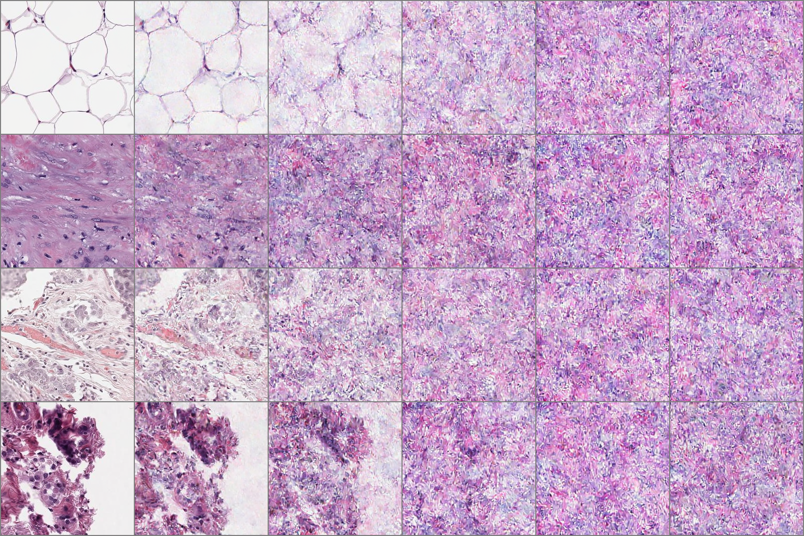

The ORCHID dataset
The ORal Cancer Histology Dataset: A comprehensive histopathology dataset for ML in Oral Cancer grade and stage detection.
Page
The ORal Cancer Histology Dataset: A comprehensive histopathology dataset for ML in Oral Cancer grade and stage detection.

Grade-level classification of oral squamous cell carcinoma from histopathology using deep-learning algorithms.

We participated in a DREAM challenge to use audio recordings of cough to diagnose the presence of Tuberculosos in a patient.

Tracking positional movement of Wild-type Zebrafish (Danio Rerio) to examine behavioural patterns using Computer Vision.

Improving text-conditioned latent diffusion models for breast cancer histopathology in a large scale cohort.